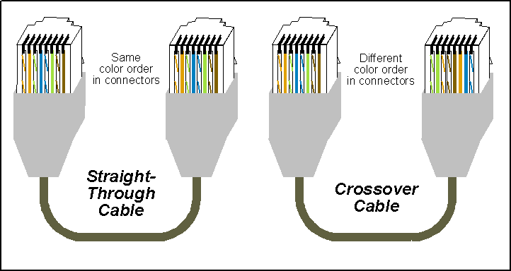

Práctica: Cables de red
Resumen
Durante la práctica, investigamos y explicamos las configuraciones de los cables de red estructurados, tanto directos como cruzados. Nos enfocamos en comprender las diferencias entre el estándar T568A y T568B, y cómo se aplican en cada tipo de cable. Posteriormente, armamos dos cables de red directos y dos cables de red cruzados, asegurándonos de seguir las configuraciones correctas. Finalmente, probamos cada cable para verificar su funcionamiento y asegurarnos de que estaban correctamente armados y operativos.
Introducción
En esta práctica, nos propusimos conocer, identificar y comprobar el funcionamiento de los cables de red estructurados. Este conocimiento es esencial para garantizar una correcta instalación y mantenimiento de redes de comunicación, fundamentales en cualquier entorno tecnológico. A través de la configuración y prueba de cables directos y cruzados, buscamos afianzar nuestras habilidades prácticas en el manejo de infraestructuras de red.
Materiales
- Cable de red para armar
- Cabezales de ethernet
- Pinza ponchadora de cable de red
Desarrollo
Objetivo general
Conocer, identificar y comprobar el funcionamiento de los cables de red estructurado.
Objetivos específicos
- Investigar la configuración de los cables de red estructurados: Directo y Cruzado.
- Investigar y explicar la forma de probar un cable de red directo y uno cruzado.
- Armas 2 cables de red directos y probarlos.
- Armar 2 cables de red cruzados y probarlos.
Configuración de los Cables de Red Estructurados: Directo y Cruzado
Cable Directo (Straight-Through)
Un cable directo se utiliza para conectar dispositivos diferentes, como un computador a un switch o un router. La configuración de los cables directos sigue el mismo orden de colores en ambos extremos, según el estándar T568A o T568B.
Estándar T568A:
Pin 1: Blanco/Verde
Pin 2: Verde
Pin 3: Blanco/Naranja
Pin 4: Azul
Pin 5: Blanco/Azul
Pin 6: Naranja
Pin 7: Blanco/Marrón
Pin 8: Marrón
Estándar T568B:
Pin 1: Blanco/Naranja
Pin 2: Naranja
Pin 3: Blanco/Verde
Pin 4: Azul
Pin 5: Blanco/Azul
Pin 6: Verde
Pin 7: Blanco/Marrón
Pin 8: Marrón
Para que un cable sea considerado directo, ambos extremos deben seguir el mismo estándar, ya sea T568A o T568B.
Cable Cruzado (Crossover)
Un cable cruzado se utiliza para conectar dispositivos similares, como un computador a otro computador o un switch a otro switch sin necesidad de un puerto uplink. La configuración de un cable cruzado implica diferentes órdenes de colores en cada extremo. Generalmente, un extremo sigue el estándar T568A y el otro extremo sigue el estándar T568B:
Extremo A (T568A):
Pin 1: Blanco/Verde
Pin 2: Verde
Pin 3: Blanco/Naranja
Pin 4: Azul
Pin 5: Blanco/Azul
Pin 6: Naranja
Pin 7: Blanco/Marrón
Pin 8: Marrón
Extremo B (T568B):
Pin 1: Blanco/Naranja
Pin 2: Naranja
Pin 3: Blanco/Verde
Pin 4: Azul
Pin 5: Blanco/Azul
Pin 6: Verde
Pin 7: Blanco/Marrón
Pin 8: Marrón
Probar un Cable de Red Directo y Cruzado
Probar un Cable Directo
Para comprobar el funcionamiento de un cable directo, seguimos estos pasos:
- Inspección Visual: Verificamos que los colores de los cables sigan el mismo orden en ambos extremos del cable.
- Prueba de Conexión:
- Conectamos un extremo del cable a la red de la universidad.
- Conectamos el otro extremo a una computadora.
- Para comprobar si el cable funciona, intentamos conectarnos a la red de la universidad desde la computadora. Si logramos conectarnos a la red, confirmamos que el cable directo está funcionando correctamente.
Probar un Cable Cruzado
Para comprobar el funcionamiento de un cable cruzado, seguimos estos pasos:
- Inspección Visual: Verificamos que los colores de los cables sigan el orden T568A en un extremo y T568B en el otro.
- Prueba de Conexión:
- Conectamos un extremo del cable a una computadora.
- Conectamos el otro extremo a otra computadora.
- Para verificar la conexión, observamos que en ambas computadoras apareció un mensaje indicando que hay una conexión de red, pero que esta no está identificada. Este mensaje nos confirma que el cable cruzado está configurado correctamente y permite la comunicación directa entre las dos computadoras.
Resultados
Cable directo
Cable cruzado
Conclusiones
Al finalizar la práctica, logramos armar y probar exitosamente tanto cables de red directos como cruzados. A través de la inspección visual y el uso de un tester de cables, confirmamos que nuestras conexiones eran correctas y funcionales. Esta experiencia nos permitió fortalecer nuestra comprensión de las configuraciones de cables de red y nos preparó mejor para futuras tareas relacionadas con la infraestructura de red. La práctica no solo nos proporcionó habilidades técnicas, sino también la confianza para aplicar estos conocimientos en escenarios reales.
Referencias
No hay referencias.
Descargables
No hay descargables